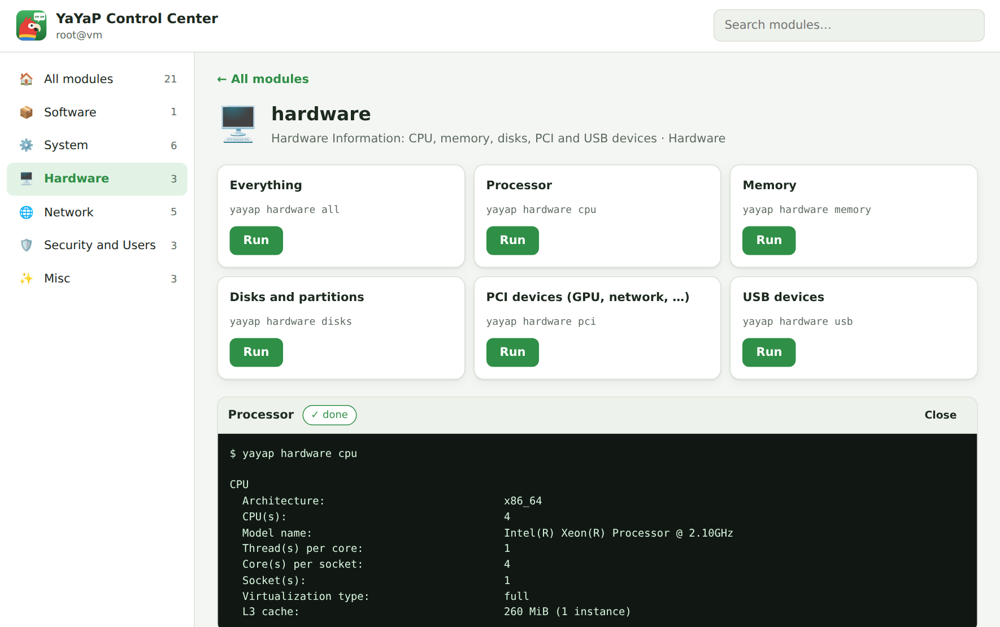

YaYaP
Yet Another "Yet Another" Program
A YaST-style control center for any Linux distro. Packages, services, users, firewall, logs and more, as a desktop app, a terminal UI, or plain commands. Written in Bash, needs almost nothing.

Like YaST, three ways in
Click it, arrow-key it, or type it.
Every module works in all three. The GUI and the TUI show you the real command they run, so you pick up the CLI as you go.
🖥️ Desktop app
yayap gui Categories, module tiles, live output. sudo passwords pop up as dialogs.

⌨️ Terminal UI
yayap The ncurses Control Center. Uses whiptail or dialog, or a plain menu.
┌──────────┤ YaYaP Control Center ├──────────┐ │ pick a category │ │ │ │ Software 1 module │ │ System 6 modules │ │ Hardware 3 modules │ │ Network 5 modules │ │ Security and Users 3 modules │ │ Misc 3 modules │ │ │ │ <Ok> <Quit> │ └─────────────────────────────────────────┘
⚡ Plain commands
yayap <module> Same syntax on Debian, Fedora, Arch, openSUSE, Alpine…
$ yayap pkg install htop $ yayap pkg update $ yayap services restart sshd $ yayap users add alex $ yayap firewall allow 8080/tcp $ yayap datetime set-tz Europe/Berlin $ yayap logs -e -b $ yayap hardware usb $ yayap clean --force $ yayap yap "hi"
Modules
22 modules, sorted the YaST way.
This list comes straight from the code every time the site gets built, so it's never out of date.
Extend it
One file = one module.
Drop a script in lib/commands/. It shows up in the help, the TUI and the GUI with zero other changes.
- 🔐 Root, done right
as_rootuses sudo or doas only when needed. In the GUI it becomes a password dialog. - ❓ Asks first
confirmandask_secretare prompts in the terminal and dialogs in the app. - 🐧 Any distroGNU or busybox, systemd or OpenRC, apt to xbps. Tested on Alpine too.
# lib/commands/hello.sh # about: Say hi # category: Misc # icon: 👋 cmd_hello() { info "hello, ${1:-world}" } # menu entries for the TUI + GUI: "Label|args" # {Prompt} asks the user for a value cmd_hello_actions() { cat <<'A' Say hi to the world| Say hi to someone|{Name} A }